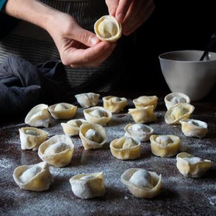
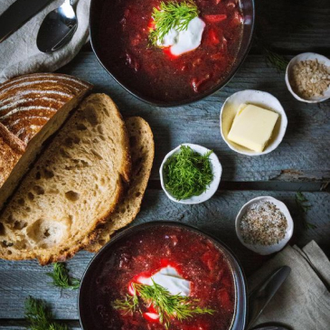
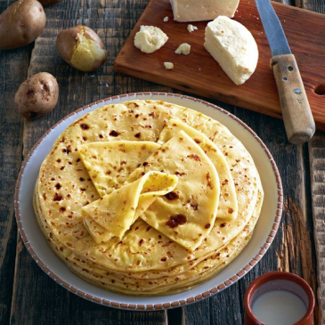
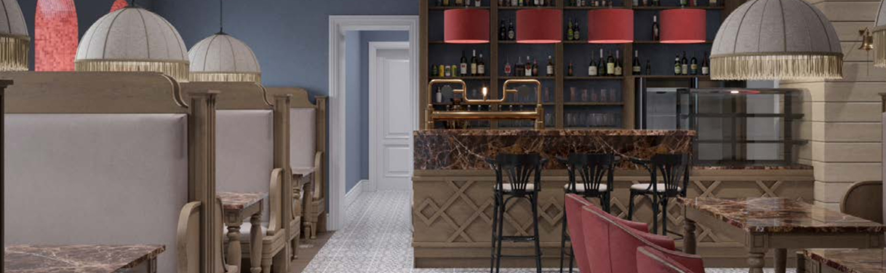

<div class="Author">
    <div class="container">
        <div class="Author__header text-align-cen">
            
            <h2 class="Author__header-title">Авторская кухня</h2>
            <p class="Author__header-descr text text">Мы пригласили Владимира Тихомирова, шеф-повара ресторана «Русские Сезоны», разработать «Перловским баням» меню и барную карту. Теперь мы можем накормить гостя с любыми вкусовыми пристрастями: традиционными мясными и рыбными кушаньями, а также блюдами здорового питания.</p>
            <div class="Author__button">
                <button class=" button-gray">Меню</button>
            </div>
        </div>

        <div class="Author__galery">
            
            
            
        </div>

        <div class="Author__plain text-align-cen">
            
            <h4 class="Author__plain-title">Гостей балуем сезонными новинками — летом наливаем домашние лимонады <br> и сервируем окрошку, зимой — готовим холодец и селедку под шубой.</h4>
            <p class="Author__plain-subtitle">Перловские бани</p>

            
        </div>

        <span class="plitka plitka-invisible"></span>
        <span class="plitka plitka-invisible"></span>
        <span class="plitka plitka-invisible"></span>
        <span class="plitka plitka-invisible"></span>
    </div>
</div>